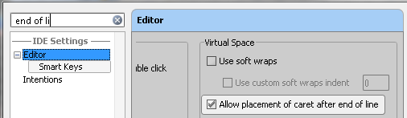

| You can quickly find a setting you need in the Settings dialog, without browsing through the numerous options.
Just type some characters that to your opinion exist in the option description, and the list of settings will reduce to the
matching ones. Select the desired entry, and see the setting that contains the entered characters highlighted:
 |